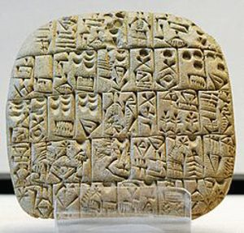
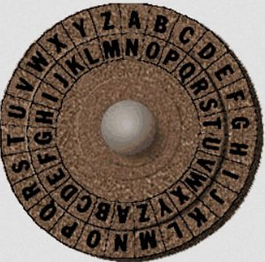
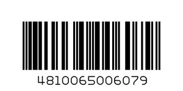
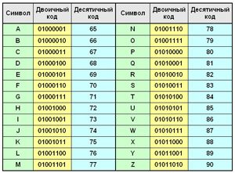
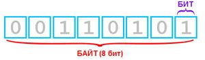
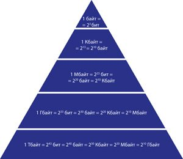

2.1. Кодирование информации
Для общения друг с другом люди используют естественный язык, например белорусский или русский. В основе естественного языка лежит алфавит, представляющий собой систему графических знаков для передачи звуков устной речи. Алфавит естественного языка является универсальным кодом любой письменной культуры. При разговоре этот код передается звуками, при письме — буквами.
Кроме естественных, человек часто использует искусственно созданные языки со своими особыми кодами: язык математических или химических формул, ноты и др.
Код — совокупность условных знаков, каждому из которых присваивается определенное значение (пример 2.1 и пример 2.2).
Процесс записи или преобразования информации в соответствии с правилами, заданными некоторым кодом, называют кодированием. Процесс, обратный кодированию, называют декодированием.
Кодировать и передавать информацию можно различными способами: устно, письменно, жестами и др.
Компьютер может обрабатывать числовую, текстовую, графическую и звуковую информацию только в цифровом формате. Цифровой формат в компьютере представлен в виде двоичного кода.
Двоичный код — способ кодирования, в котором каждый разряд принимает одно из двух возможных значений, обычно обозначаемых цифрами 0 и 1. Разряд в этом случае называется двоичным разрядом.
Такой способ кодирования связан с тем, что наиболее просто реализуются технические устройства, обладающие двумя устойчивыми состояниями: включено / выключено, соединено / разъединено и др.
Таким образом, для кодирования числовой информации в компьютере вместо известной всем десятичной системы счисления используется двоичная, основанная на двоичном коде.
Кодирование текстовой (символьной) информации в компьютере выполняется с помощью специальных кодовых таблиц, в которых каждому символу ставится в соответствие определенная последовательность из нулей и единиц (пример 2.3).
2.2. Единицы измерения объема информации
В своей деятельности человек постоянно применяет различные единицы измерения. Например, для измерения времени используются секунды, минуты, часы, для измерения расстояния — метры, километры, а для измерения температуры — градусы и т. д. Измерения проводят с помощью измерительных приборов (пример 2.4).
Для определения количества информации существуют свои единицы измерения. Минимальное количество информации, для кодирования которой достаточно одного двоичного разряда, называют битом (bit).
Слово «бит» произошло от двух английских слов — binary (двоичный) и digit (знак). Бит является минимальной единицей, выражающей количество информации. При этом он может принимать только одно из двух значений — 0 или 1. Для удобства введена более крупная единица измерения информации — байт.
|
Байт — единица измерения количества информации, состоящая из восьми последовательных и взаимосвязанных битов. 1 байт = 23 бит = 8 бит (пример 2.5). Для обозначения большего объема информации используются другие единицы измерения: 1 Кбайт (килобайт) = 1 024 байт; 1 Мбайт (мегабайт) = 1 048 576 байт; 1 Гбайт (гигабайт) = 1 073 741 824 байт; 1 Тбайт (терабайт) = 1 099 511 627 776 байт. |
Значения данных единиц измерения информации для удобства кодирования связаны со степенью числа 2 (пример 2.6).
В этих единицах измеряются количество (объем) оперативной или внешней памяти компьютера, размеры файлов. В примере 2.7 показано, каким образом выполняется перевод одних единиц измерения информации в другие.
| Кодирование информации использовалось с глубокой древности для хранения и
передачи информации. Примером кодирования могут послужить образцы шумерской
клинописи:
 Широко известен шифр Юлия Цезаря — кодирование, применявшееся для записи и передачи секретных сообщений. Каждый символ в тексте заменяется символом, находящимся на некотором постоянном расстоянии левее или правее него в алфавите.  Например, при кодировании информации с помощью букв русского алфавита путем сдвига вправо на 3 буква А была бы заменена на Г, буква Б станет Д и т. д. |
| Пример 2.1. Сегодня широко применяются
штрих-коды на различных товарах. Вот так, например, выглядит штрих-код
сгущенного молока:
 Пример 2.2. С появлением смартфонов стали распространяться QR-коды. Они позволяют моментально заносить в свой телефон текстовую информацию, добавлять контакты в адресную книгу, переходить по web-ссылкам, отправлять SMS-сообщения и т. д. Перед вами QR-код со ссылкой на статью в Wikipedia о QR-кодах. Пример 2.3. Кодирование английского алфавита на компьютере:  Пример 2.4. Пример 2.5. Соотношение между битом и байтом  Пример 2.6. Соотношение единиц измерения информации.  Пример 2.7. |

1 Что такое код?
2 Какой код используют для кодирования информации в компьютере?
3 Выберите из списка единицы измерения информации.

2 В одном из рассказов А. Конан Дойля великий сыщик Шерлок Холмс разгадывает шифр пляшущих человечков. Расшифруйте фразу, используя алфавит, применявшийся при ее кодировании.
3 В азбуке Морзе буквы и цифры заменяются последовательностями из коротких и длинных сигналов — точек и тире:
|
А |
Б |
В |
Г |
Д |
Е |
Ж |
З |
И |
К |
Л |
М |
Н |
О |
|
.- |
-… |
.— |
—. |
-.. |
. |
…— |
—.. |
.. |
-.- |
.-.. |
— |
-. |
— |
|
П |
Р |
С |
Т |
У |
Ф |
Х |
Ц |
Ч |
Ш |
Щ |
Ъ, Ь |
Ы |
Э |
|
.—. |
.-. |
… |
— |
..- |
..-. |
…. |
-.-. |
—. |
—- |
—.- |
-..- |
-.— |
..-.. |
|
Ю |
Я |
1 |
2 |
3 |
4 |
5 |
6 |
7 |
8 |
9 |
0 |
||
|
..— |
.-.- |
.—- |
..— |
…— |
….- |
….. |
-…. |
—… |
—.. |
—-. |
—— |
1. С помощью азбуки Морзе запишите: «Запас беды не чинит».
2. Расшифруйте информацию, представленную на азбуке Морзе.
|
-. |
.- |
— |
—- |
.. |
-… |
-.- |
.- |
…. |
..- |
—. |
.- |
— |
… |
.-.- |
4 Выполните перевод единиц измерения информации:
1. 174 байта в биты.
2. 342,3 Кбайт в байты.
3. 45638 Мбайт в Гбайт.